October 2017 (version 1.18)
Update 1.18.1: The update addresses these issues.
Welcome to the October 2017 release of Visual Studio Code. There are a number of significant updates in this release and we completed several popular outstanding feature requests. We hope you like it and the highlights include:
- Multi-root workspaces released to Stable - Group a logical set of folders into a single workspace.
- Vertical panels - Dock panels (Terminal, Output, or Debug Console) to the right of your editor.
- Git indicators in the Explorer - See pending file changes in the File Explorer.
- Inline pending change review - View pending changes and perform partial commits in the editor.
- Several performance improvements - Faster Windows start-up and editor performance tuning.
- Auto imports for JS/TS - Relevant imports are added as you call local symbols.
- Extract local variable for JS/TS - Refactor a new local variable based on your selection.
- Install @types for TypeScript - A new Quick Fix adds missing @types files to your project.
- Improved extension recommendations - Recommendations are highlighted in extension searches.
If you’d like to read these release notes online, go to Updates on code.visualstudio.com.
You can also check out this 1.18 release highlights video from Cloud Developer Advocate Brian Clark.
The release notes are arranged in the following sections related to VS Code focus areas. Here are some further updates:
- Workbench - Blue product logo, panels overflow support, file move confirmation.
- Integrated Terminal - Better Windows support, show faint text, unset environment keys.
- Source Control - Inline pending change view, File Explorer indicators.
- Languages - TypeScript 2.6.1, localized JS/TS messages, IntelliSense inside strings and comments.
- Debugging - Debug configuration in the Status Bar, Debug view focus commands, console coloring.
- Extension Authoring - ConfigurationChangeEvent, async Input Box validation, folder open/closed icons.
Insiders: Want to see new features as soon as possible? You can download the nightly Insiders build and try the latest updates as soon as they are available.
Workbench
Support for Multi Root Workspaces
Support for multi-root workspaces is now enabled by default in the Stable release. This was our #1 feature request - it’s been a while coming but it’s here now.
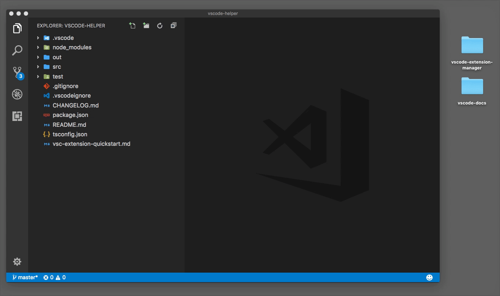
Please refer to our documentation for a full explanation of all of the multiple folder features: improvements to settings, our SCM experience, Tasks, Debugging and more.
NOTE: Extension authors should refer to our wiki that explains the new extension APIs to make your extension fully leverage multi-root workspaces.
Git status in File Explorer
To satisfy another very popular feature request, we added support to the File Explorer to show modified, added, conflicting, and ignored files in a different color and with a badge.
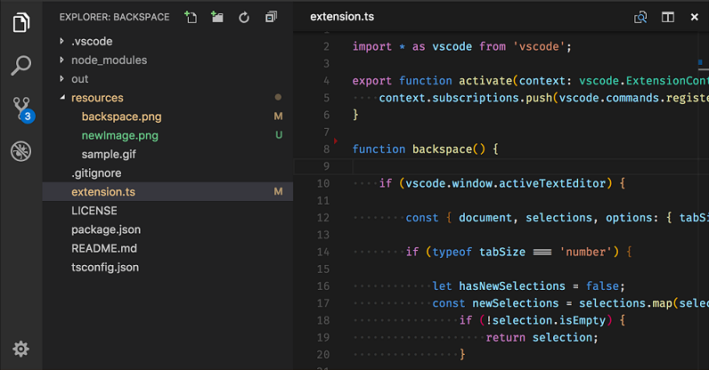
The Git file decorations can be customized in many ways. You can hide the decorations entirely with the git.decorations.enabled setting and configure to only show colors explorer.decorations.colors or badges explorer.decorations.badges. There are new colors for theme authors which are prefixed with gitDecoration.
There is also a proposed API to allow extension authors to add color decorations to arbitrary resources. We haven’t finalized on anything yet but are eager to learn how you would use decorations.
Vertical panels
Per popular user request, we now support a vertical panel layout. Using the actions Move to Right and Move to Bottom in the panel title bar, panels can switch between being displayed on the bottom or the right side.
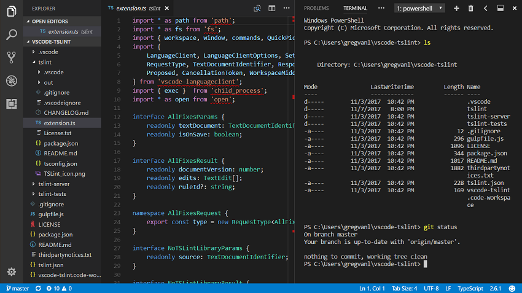
Panel title bar improvements
We have improved the panel title bar such that it is now possible to rearrange and hide panels as well as added overflow support. Overflow with the Additional Views dropdown is particularly useful when the panels are docked vertically and have limited horizontal space.
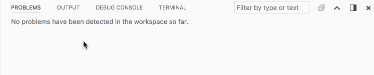
Blue logo for Stable
The VS Code logo for Stable releases is now blue again. You can read all about our icon journey in this blog post.
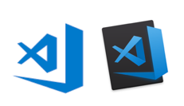
Note: Depending on your platform, you may still see the earlier logo due to operating system caching of the application icon.
Confirmations in File Explorer
We now present a confirmation dialog when moving files or folders in the File Explorer via drag and drop. This should prevent accidentally performing a move when not desired. If you don’t want to see the confirmation dialog, you can configure explorer.confirmDragAndDrop to false.
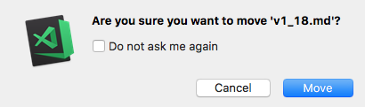
We also added a new setting, explorer.confirmDelete, to optionally hide our existing delete confirmation dialog.
Note: We will always show a confirmation dialog when deleting a file or folder will bypass your platform’s trash bin.
Quick Open applies .gitignore exclusions
Quick Open (⌘P (Windows, Linux Ctrl+P)) applies the exclusions from .gitignore files when enabled with the "search.useIgnoreFiles" setting.
Editor
Ctrl+D / Cmd+D improvements
Due to popular demand, the Add Selection to Next Find Match (⌘D (Windows, Linux Ctrl+D)) action has been modified to behave differently when you start adding multiple cursors with no selected text. In this case, the action will temporarily ignore the Find widget search options and will always search for whole words and case sensitive matches.
Navigate to next / previous symbolic highlight
Thanks to PR #35740 from Krzysztof Cieślak, it is now possible to navigate between highlighted symbols using F7 or Shift+F7 in languages where there is a semantic highlight provider. When you have a symbol selected, you can now quickly move to other instances of that symbol in your file.
Integrated Terminal
Faint text support
The terminal now supports the escape sequence for faint text:
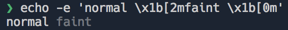
Unset environment keys
You can already set custom environment variables for Integrated Terminal sessions but now you can also clear existing variables by assigning them to null in the terminal.integrated.env.<platform> settings:
|
Improved Windows support
Windows support in the Integrated Terminal has been improved:
- Deeply nested processes are now properly cleaned up after exiting the terminal session. This happened most frequently with servers launched from Node.js.
- On Windows, the terminal received lines already wrapped so we don’t know which lines are wrapped and which are separated by new lines. We now guess where lines are wrapped by checking the last character of the previous line and flag them as such. This fixes a problem with tasks where problem matchers would break on Windows and is also one of the prerequisites to get multi-line links working on Windows.
Languages
TypeScript 2.6.1
VS Code 1.18 ships with TypeScript 2.6.1. This update provides VS Code with several exciting tooling improvements and also fixes a few bugs. You can read more about TypeScript 2.6 here.
Auto Import for JavaScript and TypeScript
Speed up your coding with auto imports for JavaScript and TypeScript. The suggestion list now includes all exported symbols in the current project. Just start typing:
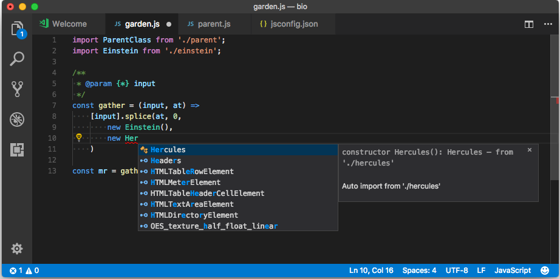
If you choose one of the suggestion from another file or module, VS Code will automatically add an import for it. In this example, VS Code adds an import for Hercules to the top of the file:

Auto imports requires TypeScript 2.6+. You can disable auto imports by setting "typescript.autoImportSuggestions.enabled": false.
Localizable error messages and Quick Fix descriptions for JavaScript and TypeScript
JavaScript and TypeScript error messages and Quick Fix descriptions are now displayed in your current display language:
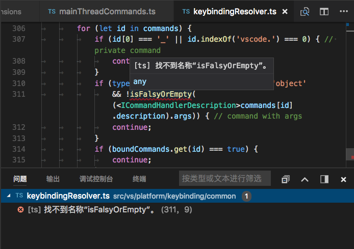
The "typescript.locale" setting lets you configure which language is used separately from your editor’s display language. To revert to VS Code’s 1.17 English only error messages, set "typescript.locale": "en".
Extract local refactoring for JavaScript and TypeScript
VS Code 1.18 adds several new JavaScript and TypeScript refactorings in addition to the extract method refactoring added in VS Code 1.16. The extract constant refactoring creates a new local variable for the currently selected expression:

When working with classes, you can also extract a value to a new property.
Install @types Quick Fix for TypeScript
TypeScript now offers a Quick Fix to npm install missing @types definitions for a given module:
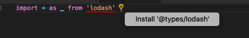
This Quick Fix will install the @types definition locally and add it to the devDependencies in your package.json.
Additional typescript.tsc.autoDetect settings
VS Code automatically generates both build and build+watch tasks for all tsconfig.json files in your workspace. In VS Code 1.18, the typescript.tsc.autoDetect setting now lets you control which kinds of tasks are generated:
|
Support for selectively enabling quick suggestions inside of strings and comments
Quick suggestions are disabled inside of strings and comments by default. In some cases, such as in JavaScript template strings, a string or comment may contain blocks of code where quick suggestions should be enabled. Grammars can now hint that VS Code should re-enable quick suggestions by adding a meta.embedded scope on tokens inside of a string or comment:
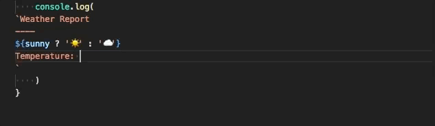
JSON
JSON now supports JSON Schema Draft 06. The most notable additions are the const, contains and propertyNames properties. Read here for a more detailed overview of changes from draft 04.
Source Control
Inline change review
You can now review source code changes right within the standard editor. This feature depends on whether it is supported by the source code provider but it is already enabled for Git repositories out of the box.
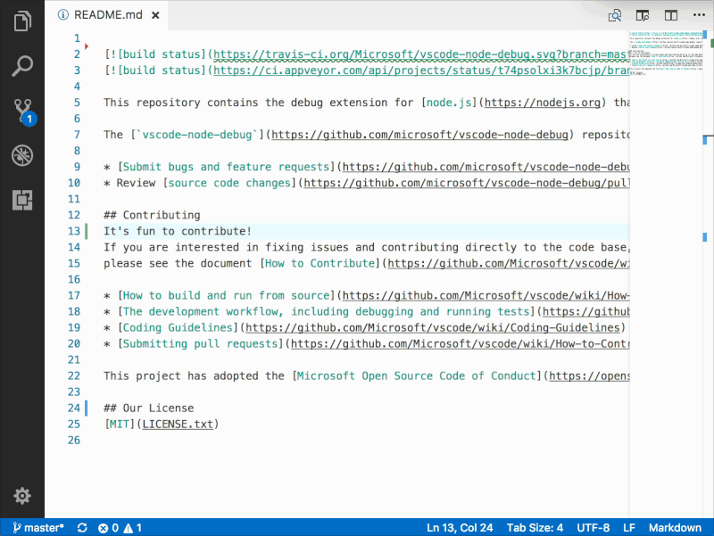
With this new UI, you can not only review your code changes but also navigate, stage or revert them inline.
Git: Conflict marker detection
When staging a file which is flagged as having conflicts due to a merge or rebase, VS Code will check for the standard merge markers (for example <<<<<<<) and alert you if you forget to delete them when you are about to stage the file.
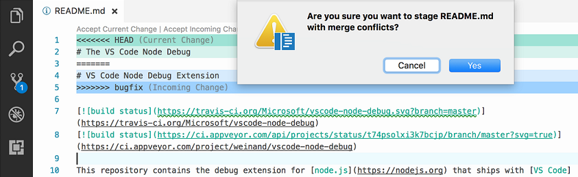
Git: Improved integration
Recently, there was a patch to Git which enables tools like VS Code to use git status without interfering with other concurrent Git commands. VS Code is now prepared for that upcoming Git change by using the right environment context (GIT_OPTIONAL_LOCKS) when spawning Git.
Extensions
Recommended extensions badge
Recommended extensions now display a badge to easily distinguish them from other extensions in a list. Hover on the badge or click the list item to learn why the extension was recommended to you.
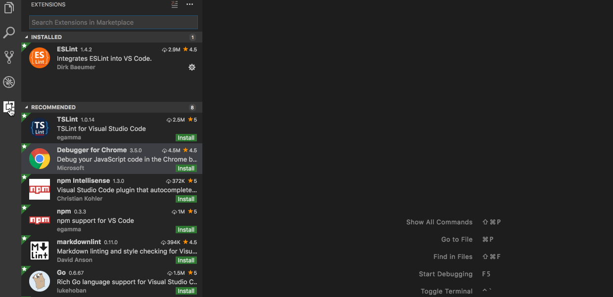
Single view combining workspace and general recommendations
The two views for workspace recommended extensions and general recommended extensions are now combined into a single view with the two kinds of recommendations showing up in a split view. Use the command Extensions: Show Recommended Extensions to see this view.
There is also a handy Install All Workspace Recommendations command on the WORKSPACE RECOMMENDATIONS title bar to install all the extensions that are recommended by other users of your workspace.
You can edit workspace recommendations via the Configure Recommended Extensions (Workspace Folder) command in the same title bar.
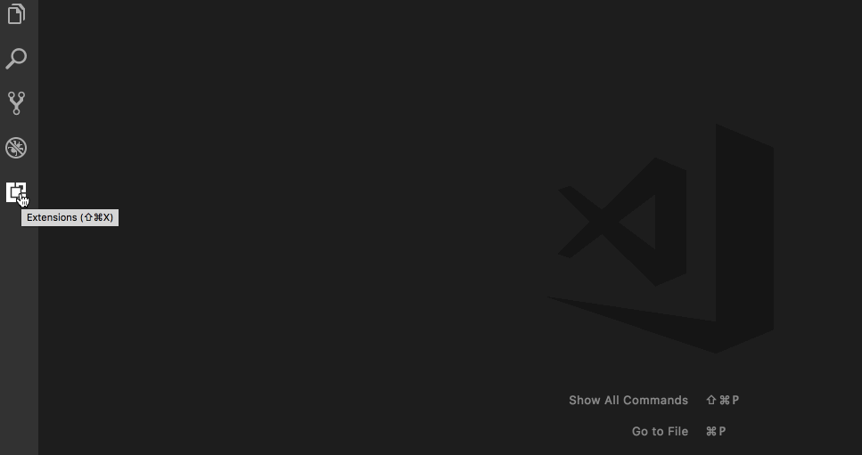
Debugging
Debug in Status Bar
VS Code now shows the active debug launch configuration in the Status Bar. By clicking on the debug status, a user can change the active launch configuration and then start debugging without the need to open the Debug view.
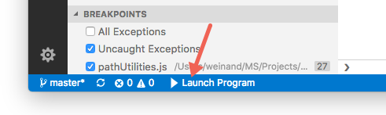
Focus actions
We have introduced new actions to easily move keyboard focus to the various Debug sections. This should make it easier for keyboard centric users to navigate while debugging.
These actions are:
- Focus Variables:
workbench.debug.action.focusVariablesView - Focus Watch:
workbench.debug.action.focusWatchView - Focus CallStack:
workbench.debug.action.focusCallStackView - Focus Breakpoints:
workbench.debug.action.focusBreakpointsView
Start without debugging shortcut
The default keyboard shortcut on macOS for Debug: Start Without Debugging changed to Ctrl+F5 to avoid a collision with an existing macOS keyboard shortcut.
Coloring of Debug Console evaluation results based on type
Debug console expressions are now colored based on the type property returned from the debug extension. This is currently supported by the Node.js debug extension.
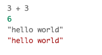
More WSL support for Node.js
A first glimpse of support for Node.js debugging in the Windows Subsystem for Linux (WSL) was already available in the previous milestone (but only for older versions of Node.js that still support the “legacy” protocol). In this milestone, another pull request by Bartosz Sosnowski (@bzoz) was integrated that adds support for the “inspector” protocol that is used by more recent versions of Node.js. With this update, it is now possible to run Node.js v8 in WSL.
Tasks
Schema improvements
The schema for the tasks.json file version 2.0.0 was updated. The taskName property is deprecated in favor of the label property to make it more consistent with contributed tasks. In addition, there is now a snippet for new tasks. By default, it creates a task of type shell to execute commands in the Integrated Terminal.
workspaceFolder replaces workspaceRoot
Last release, we deprecated the ${workspaceRoot} variable in favor of ${workspaceFolder} to make this consistent with multi-root workspace support. For the same reason, we are deprecating ${workspaceRootFolderName}. Please use ${workspaceFolderBasename} instead. This deprecation applies to debug launch configurations as well.
Performance improvements
Faster editor decorations
Decorations are a fundamental editor concept on which numerous features are built; for example: find matches highlights, diff annotations, word highlights, selection highlights, breakpoints, folding markers, and inline colors. Moreover, numerous extensions make use of decorations to customize the rendering of VS Code’s editor. Below is a screenshot with various editor decorations highlighted:
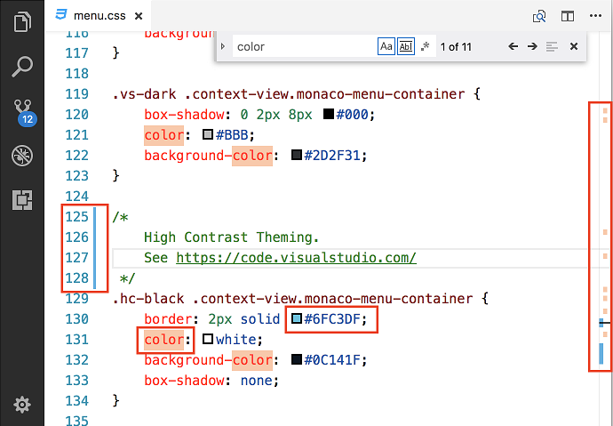
PR #36410 reimplements editor decorations as a delta-encoded Interval Tree (an augmented Red-Black tree). Besides reducing the time spent in all operations related to decorations (creating, updating, deleting or querying), the change also brings in some impressive memory usage savings. As an immediate result of these optimizations, we have increased the in-file on type find limit from 1,000 matches to 20,000 matches.
Windows start-up
We are always on the lookout for ways to improve VS Code start-up time. During the last month, we made a variety of improvements that significantly decreased the time of the initial (cold) launch of VS Code.
Extension Authoring
Configuration: Listen to specific changes
Now Configuration change event provides a ConfigurationChangeEvent object that has a method affectsConfiguration to check about configuration changes. You can also check if a configuration has changed for a resource.
|
Async Input Box validation
The showInputBox function now supports asynchronous validation. Call showInputBox like so:
|
Folder icons in File Icon Themes
File Icon themes can now disable the default folder icon (the rotating triangle) in tree views and use the folder icons to indicate the expansion state:
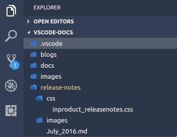
To do so, File Icon themes must specify "hidesExplorerArrows":true in the File Icon theme definition file.
Thanks to Ari for the PR.
New Context: resourceExtname
There is a new context key to control keybindings and menu items. Its name is resourceExtname and its value will be the extension of the file in question.
New workspace.name property
A new workspace.name property was added that provides (readonly) access to the name of the workspace. The name will be undefined if no workspace is opened.
SCM: New menu: scm/change/title
Along with the new SCM inline change review, a new contributable menu context is now available: scm/change/title. It allows you to contribute commands to the header of an inline change review view.
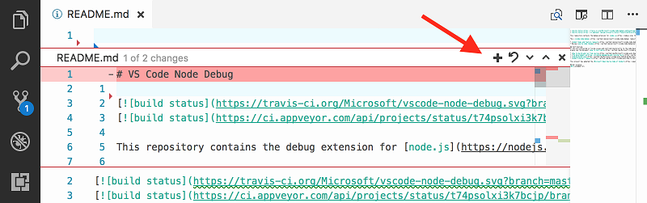
Terminal: Setting environment
You can now set the environment of terminal instances launched via the extension API:
|
Debug API updates
Command debug.logToDebugConsole is deprecated
With the introduction of a proper vscode.debug.console.append(...) API in the October release, it is no longer necessary to use the debug.logToDebugConsole command to append text to the debug console. Due to that we are deprecating the debug.logToDebugConsole command and plan to drop support for it in the future. If it is difficult for you to move off this feature, please speak up by commenting here.
Note: Currently this API is proposed, so in order to use it you must opt into it by adding a
"enableProposedApi": truetopackage.jsonand you’ll have to copy thevscode.proposed.d.tsinto your extension project. Also be aware that you cannot publish an extension to the Marketplace that uses theenableProposedApiattribute.
Command vscode.startDebug has been removed
As announced in the previous release, we have finally removed support for the vscode.startDebug command.
Command vscode.workbench.customDebugRequest has been removed
As announced in the previous release, we have finally removed support for the vscode.workbench.customDebugRequest command.
Debug contributions in package.json
Activation event onDebug:type has been removed
As announced in the previous release, we have finally removed support for the onDebug:type activation event.
Using debuggers.startSessionCommand in package.json has been removed
As announced in the previous release, we have finally removed support for the startSessionCommand command.
Using command with debuggers.initialConfigurations in package.json is deprecated
As announced in the previous release, we have finally removed support for the initialConfigurations command.
Updated documentation and mock-debug example
With this release, most of the command based debug API has been replaced by the proper API available through vscode.d.ts. Consequently, we have updated both the documentation for debug extensions and the underlying mock-debug example for the new APIs.
New commands
| Key | Command | Command id |
|---|---|---|
| Open quick file picker with the second entry selected by default | workbench.action.quickOpenPreviousEditor | |
| Open a folder as workspace in a new window | workbench.action.openFolderAsWorkspaceInNewWindow | |
| Remove a root folder from the workspace | workbench.action.removeRootFolder | |
| Focus Problems | workbench.action.problems.focus | |
| Focus Variables | workbench.debug.action.focusVariablesView | |
| Focus Watch | workbench.debug.action.focusWatchView | |
| Focus CallStack | workbench.debug.action.focusCallStackView | |
| Focus Breakpoints | workbench.debug.action.focusBreakpointsView |
Notable Changes
- 22523: Touch support in editor tabs (scrolling, open, context menu)
- 35527: macOS High Sierra: parts of the UI not rendering
- 36122: Windows: window on secondary monitor does not restore at exact position
- 36695: Workspace doesn’t restores itself on re-opening Code in Ubuntu 17.10 GNOME
Thank You
Last but certainly not least, a big Thank You! to the following folks that helped to make VS Code even better:
- @284km: Fix a typo PR #36702
- Fares Rihani (@anchepiece): Update code.iss to associate
.bibfiles PR #36509 - Andy Li (@andyli): replace ‘Courier New’ with ‘monospace’ in Linux font list PR #34947
- Arthur Ozga (@aozgaa): add tsserver version property to every event PR #37066
- Beyang Liu (@beyang): Remove kludge that adds history item when new input is set on an editor PR #35682
- Brandon Bloom (@brandonbloom): Fixes #36544. PR #36578
- Dan Adler (@dadlerj): Don’t re-render hovers if nothing has changed; Add telemetry on hovers PR #29387
- David Gileadi (@dgileadi): Support the “reason” arg for trimming trailing whitespace PR #35778
- Dominik Kundel (@dkundel): Playground improvements as suggested in #35328 PR #36681
- Don Jayamanne (@DonJayamanne): fixes #36854 folder picker api PR #36855
- Eli Barzilay (@elibarzilay): Fix small typo PR #35531
- Felix Becker (@felixfbecker)
- Felix Krull (@fkrull): Fix misspelt hc-black class. PR #37008
- Gunnar Wagenknecht (@guw): Only restore expansion state when there are items. PR #36539
- lizz (@innerlee): Region fold in python PR #35830
- Julian Andres Klode (@julian-klode): Correctly get apt dirs in debian postinst PR #35535
- Keegan Carruthers-Smith (@keegancsmith)
- Markus Wolf (@KnisterPeter): feat(git): allow url to be given to git.clone PR #34006
- Krzysztof Cieślak (@Krzysztof-Cieslak)
- 猫科龙 (@maokelong): Correct the EBNF for snippets PR #36067
- Max Schmitt (@maxibanki)
- @MichielVanderlee: #3422 Add Region folding for bat PR #36911
- Soo Jae Hwang (@misoguy)
- Nick Snyder (@nicksnyder): add missing awaits PR #36265
- Peter Wong (@peterwmwong): Fix moveSelectionToPreviousFindMatch accidentally mapped to addSelectionToPreviousFindMatch PR #37088
- Yemi Bedu @ P&R (@pr-yemibedu): expand editor code region styles - fsharp PR #35919
- Raj (@prog-rajkamal): Fix #35322: Modernize javascript snippets PR #35444
- jmdowns2 (@jmdowns2): Fix overlapping of emmet expansions in multi cursor mode PR #35463
- Dániel Tar (@qcz)
- Robert Sesek (@rsesek): Specify the UTI types for files in the Info.plist PR #37106
- Brendan Forster (@shiftkey): disable lookup for GitHub’s version of Git PR #35965
- Shreya Dahal (@squgeim): Fixed a typo in the comments PR #35833
- Steve Desmond (@stevedesmond-ca): update keytar to 4.0.5 PR #36849
- Ari Miller (@tam5): allow hiding explorer arrows via icon theme PR #35856
- Thomas Rayner (@ThmsRynr): Fix #36924. PowerShell Extension Comment Highlighting Error PR #36926
- Vinaya (@vnbhattarai): Fix grammar: Current => Currently PR #36694
- Winsky (@wenshiqi0): global is undefined while polyfilling the native promise PR #37017
- Guangcong Luo (@Zarel): Fix stray space in editor config PR #37010
Contributions to language-server-protocol:
- Paul Brousseau (@object88): Typo: ‘notificatins’ PR #301
- Remy Suen (@rcjsuen): Grammar fixes PR #319
Contributions to vscode-languageserver-node:
- Remy Suen (@rcjsuen): Specify that the workspace.applyEdit feature is enabled in the client PR #264
- Paul Brousseau (@object88): Renaming ProtocolConnetion to ProtocolConnection PR #265
Contributions to vscode-node-debug2:
- Bartosz Sosnowski (@bzoz): Add support for Windows Subsystem Linux - refactored PR #142
- Sindre Svendby (@SindreSvendby): Accept .mjs as a valid file ending PR #147
Contributes to vscode-chrome-debug:
- John Papandriopoulos (@jpap): Support for env and cwd options. PR #520
Contributes to vscode-chrome-debug-core:
Contributes to vscode-extension-samples:
- Thomas Reggi (@reggi): isWatching deprecated use isBackground PR #26
- Nick Chen (@vazexqi): Add sample on how to localize in VS Code PR #21
Contributes to vscode-recipes:
- MOrlassino (@MOrlassino): Update README.md PR #26
- Tom Fenech (@fenech): Fix typo in filename PR #30
Contributes to vscode-extension-vscode:
Contributions to localization:
This is the seventh month since we opened community localization in Transifex. We now have nearly 500 members in the Transifex VS Code project team. We appreciate your contributions, either by providing new translations, voting on translations, or suggesting process improvements.
Here is a snapshot of top contributors for this release. For details about the project including the contributor name list, visit the project site at https://aka.ms/vscodeloc.
- French: Antoine Griffard.
- Italian: Aldo Donetti, Piero Azi, Alessandro Alpi.
- German: Carsten Kneip, Volkmar Rigo, Dejan Dinic, Jakob, Florian Seidl, Max Schmitt, Levin Rickert.
- Spanish: Andy Gonzalez, Alberto Poblacion, David Triana, Carlos Mendible, José M. Aguilar, Pablo Jiménez Pascual, Raul Rama, Jorge Serrano Pérez.
- Japanese: EbXpJ6bp, Yuichi Nukiyama, Tomoaki Yoshizawa, Takashi Takebayashi, Yuki Ueda, Yoshihisa Ozaki, Qp ringo, tanaka_733, Hiroyuki Mori, tempura.sukiyaki.
- Chinese (Simplified): Joel Yang, pluwen, Shawn Dai, Wang Weixuan, YF.
- Chinese (Traditional): Winnie Lin, Duran Hsieh, Wei-Ting(DM), Yuer Lee.
- Korean: partrita.
- Hungarian: Tar Dániel.
- Portuguese (Brazil): Roberto Fonseca, Danilo Dantas, Bruno Sonnino, SQLCrespi, Alessandro Fragnani.
- Portuguese (Portugal): António Lourenço, Miguel de Moura.
- Turkish: Adem Coşkuner.
- Czech: Sharp Mike, Leopold Podmolík.
- Dutch: Gerald Versluis, Tom Aerts.
- Polish: Sölve Svartskogen, KarbonKitty, Wojciech Maj, Mateusz Wyczawski, Marek Kurdej, Patryk Adamczyk, piotrsm7.
- Swedish: Johan Hedén, Joakim Olsson, Benny Skoog.
- Tamil: Avinash, Nadar Solomon Sunder, Praveen, Jeyanthinath Muthuram.
- Vietnamese: Thanh Phu.